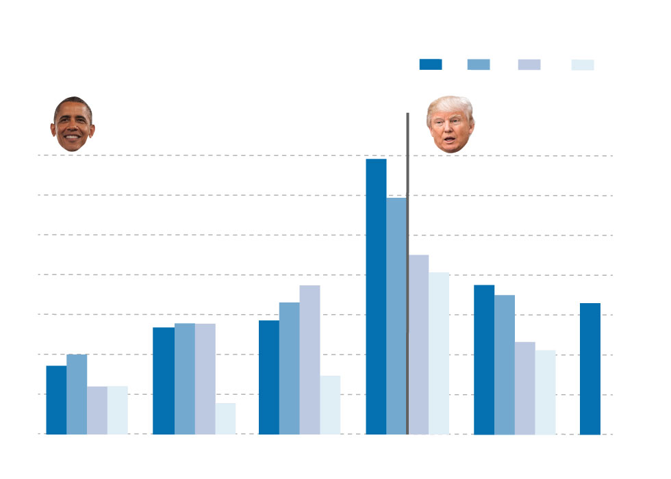

Texas is the second worst nation to grow old in, and has the worst ranking in the country when it comes to staffing, according to Centers for Medicare and Medicaid Services data. Poor staffing is a trend across the state, and residents are at risk of neglect and harm, no matter the facility’s record or location.
State inspectors from the Texas Health and Human Services Commission conduct surveys at each of the state's nursing homes receving money from the federal government. They also conduct investigations when complaints are filed. They send their findings of their surveys to Medicare and can issue fines against facilities providing substandard care. But even though violations of Medicare guidelines are increasing, fines have gone down under the Trump administration.
Texas has the largest number of nursing homes, yet the average recommended federal fine per nursing home fares close to the middle compared to other states –– even with the worst staffing rating in the country. Some inspection reports where surveyors investigated deaths due to negligence of the facility, marked with red dots below, are not even as massively fined as other deficiencies.
NPR did a story on the Trump administration’s decision to alter the way it punishes nursing homes. Starting in the second quarter of 2017, officials were more often assessing one-time “per instance” fines, while the Obama administration relied more heavily on fines that were calculated based on the number of days the home was out of compliance. Those “per day” fines tend to be bigger because they compound, NPR reported.
Critics said that giving nursing homes less incentive to fix faulty and dangerous practices before someone gets hurt. When I did an analysis to calculate the total of fines issued against nursing homes per quarter, we can identify how numbers started to decrease again after Trump's rollback of Obama era policies and regulations of the nursing home industry.
Trump Cuts Fines on Nursing Homes Violations
The Obama administration toughened fines issued to nursing homes found to be non-compliant with Medicare guidelines in 2014. Encouraged by the health care sector, President Donald J. Trump started to rollback Obama-era regulations mid-2017, lowering fines issued to nursing homes endangering the safety of their residents.
Source: Centers for Medicare and Medicaid Services

Trump Cuts Fines on Nursing Homes Violations
Source: Centers for Medicare and Medicaid Services
Source: Centers for Medicare and Medicaid Services
The largest number facilities with more than 25 deficiencies are clustered in the biggest cities in Texas. But San Antonio stands out more than the rest –– five of the 20 facilities that are most out-of-compliances are located in San Antonio, which leads in Texas with 2,119 cited deficiencies since 2016.
But a number of facilities with a lot of deficiencies are found in the Texas-Mexico border. Some of the top 20 facilities are found in McAllen, Brownsville, Laredo and Harlingen, cities that are far away from specialized health care facilities and hospitals located in more urbanized areas.
Worst Cities to Grow Old In
San Antonio, Houston, Fort Worth, Corpus Christi
and Dallas are the cities that have gathered most
deficiencies. Five of the worst 20 facilities are in
San Antonio, which leads in Texas with 2,119
cited deficiencies since 2016.
Source: Centers for Medicare and Medicaid Services
Worst Cities to
Grow Old In
Source: Centers for Medicare and Medicaid Services
Texas nursing facilities were cited over 3,000 times more in 2018 compared to 2016, according to CMS data.
But the data might not even be telling the whole story. Even though inspectors are supposed to conduct surprise visits, facilities know that there is a potential window of inspection after someone files a complaint. Even if facilities wouldn't know when a state official might be coming in, nursing homes are usually allotted a time period where they can correct their deficiency under state law, so this suggests that they may have enough time to step into compliance after posing a threat to a resident whose family filed a complaint.
Facilities are given up to 45 days to fix any issues of non-compliance before administering penalties unless the deficiency is “immediate jeopardy” (J, K or L). Some graphic, unsanitary reports are sometimes not listed as “immediate jeopardy”, giving nursing homes some leniency to correct something without any repercussion.